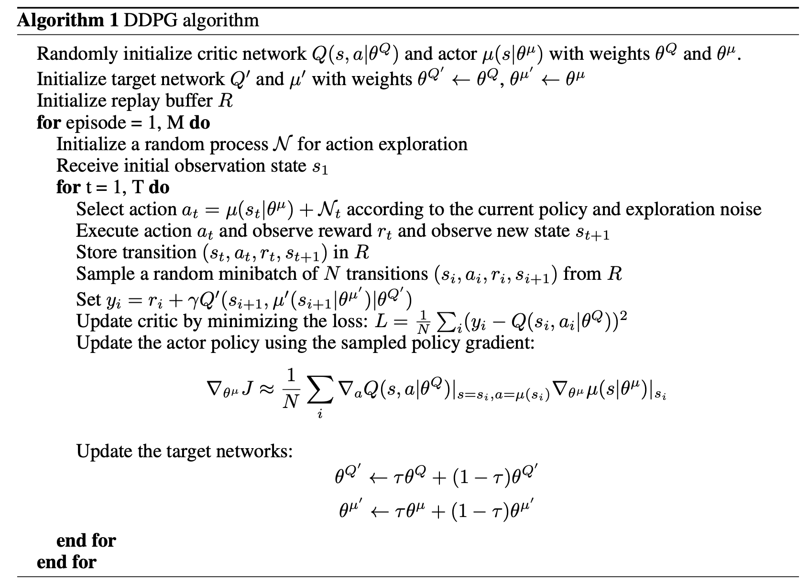
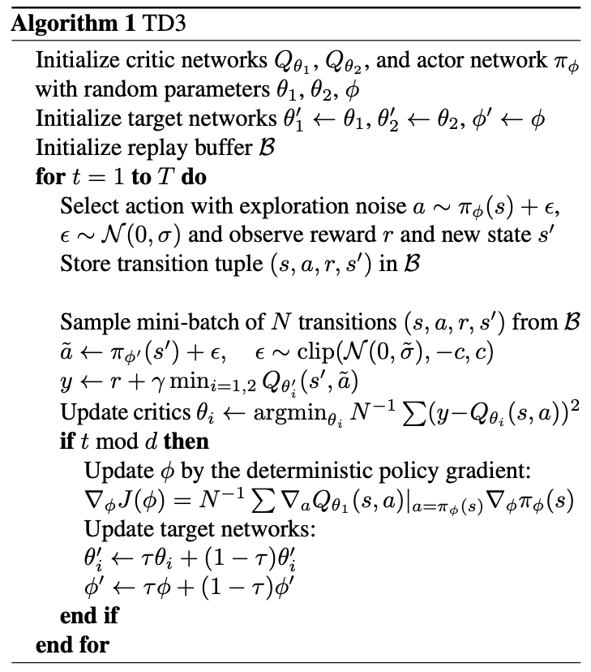

Policy Gradient Methods
Policy gradient methods mentioned:
- REINFORCE
- Off-Policy Actor Critic
- DPG
- DDPG
- TD3
Policy: \(\pi_\theta (a\vert s) =\text{Pr}\{A_t=a\vert S_t=s\}\)
Performance measure:
\[\begin{align*} J(\theta) &= \sum_{s\in S}d^\pi(s)V^\pi(s)=\sum_{s\in S}d^\pi(s)\sum_{a\in A}\pi_{\theta}(a\vert s)Q^{\pi}(s,a) \\ d^\pi(s) &= \text{lim}_{t \rightarrow \infty } P(s_t = s| s_0, \pi_0) \end{align*}\]For simplicity, the parameter \(\theta\) would be ommitted for policy \(\pi_\theta\).
Update: \(\theta_{t+1} = \theta_{t} + \alpha \widehat{\nabla J(\theta_t)}\)
Policy Gradient Theorem
\[\begin{align*} \nabla_{\theta} J(\theta)& = \nabla_{\theta} \Big (\sum_{s\in S}d^\pi(s)V^\pi(s) \Big)\\ & =\sum_{s\in S}d^\pi(s) \nabla_{\theta} V^\pi(s) \\ \end{align*}\] \[\begin{align*} \nabla_{\theta} V^\pi(s) &= \nabla_{\theta}[\sum_{a\in A}\pi_{\theta}(a\vert s)Q^{\pi}(s,a)] \\ &= \sum_{a\in A} [\nabla_{\theta}\pi_{\theta}(a\vert s)Q^{\pi}(s,a) + \pi_{\theta}(a\vert s) \nabla_{\theta} Q^{\pi}(s,a) ] \\ &= \sum_{a\in A} [\nabla_{\theta}\pi_{\theta}(a\vert s)Q^{\pi}(s,a) + \pi_{\theta}(a\vert s) \nabla_{\theta} \sum_{s',r}P(s',r|s,a)(r + V^{\pi}(s')) ] \\ &= \sum_{a\in A} [\nabla_{\theta}\pi_{\theta}(a\vert s)Q^{\pi}(s,a) + \pi_{\theta}(a\vert s) \sum_{s',r}P(s',r|s,a)\nabla_{\theta} V^{\pi}(s') ] \\ &= \sum_{a\in A} [\nabla_{\theta}\pi_{\theta}(a\vert s)Q^{\pi}(s,a) + \pi_{\theta}(a\vert s) \sum_{s'}P(s'|s,a)\nabla_{\theta} V^{\pi}(s') ] & \scriptstyle{\text{; here } P(s' | s, a) = \sum_r P(s', r | s, a)} \\ &= \sum_{a\in A} [\nabla_{\theta}\pi_{\theta}(a\vert s)Q^{\pi}(s,a) + \pi_{\theta}(a\vert s) \sum_{s'}P(s'|s,a) \\ &~~~~~~~~~~~ \sum_{a'\in A} [\nabla_{\theta}\pi_{\theta}(a'|s')Q^{\pi}(s',a') + \pi_{\theta}(a\vert s) \sum_{s''}P(s''|s',a')\nabla_{\theta} V^{\pi}(s'') ] \end{align*}\]Recursion
\[\begin{align*} \nabla_{\theta} V^\pi(s) &= \sum_{x\in S}\sum_{k=0}^{\infty} \text{Pr}(s \rightarrow x, k, \pi)\sum_{a\in A} \nabla_\theta\pi_\theta(a\vert s)Q^\pi(s,a) \end{align*}\]Simplify the notation by assming that every episode starts in some particular state \(s_0\) (not random).
Then, \(J(\theta) \doteq v_{\pi_\theta}(s_0)\)
Therefore,
\[\begin{align*} \nabla_{\theta} J(\theta) &= \nabla v_\pi(s_0) \\ &= \sum_{s}\Big( \sum_{k=0}^{\infty} \text{Pr}(s_0 \rightarrow s, k, \pi)\Big) \sum_{a} \nabla_\theta\pi_\theta(a\vert s)Q^\pi(s,a) \\ &= \sum_{s} \eta(s)\sum_{a} \nabla_\theta\pi_\theta(a\vert s)Q^\pi(s,a)\\ &= \sum_{s'} \eta(s') \frac{\sum_{s} \eta(s)}{\sum_{s'} \eta(s')} \sum_{a} \nabla_\theta\pi_\theta(a\vert s)Q^\pi(s,a)\\ &= \sum_{s'} \eta(s') \sum_{s}\frac{ \eta(s)}{\sum_{s'} \eta(s')} \sum_{a} \nabla_\theta\pi_\theta(a\vert s)Q^\pi(s,a) \\ &= \sum_{s'} \eta(s') \sum_{s} d^{\pi}(s)\sum_{a}\nabla_\theta\pi_\theta(a\vert s)Q^\pi(s,a)\\ &\propto\sum_{s\in S}d^\pi(s) \sum_{a} \nabla_\theta\pi_\theta(a\vert s)Q^\pi(s,a) \end{align*}\]Sometime, written as,
\[\begin{align*} \nabla_{\theta} J(\theta) &\propto\sum_{s\in S}d^\pi(s) \sum_{a} \nabla_\theta\pi_\theta(a\vert s)Q^\pi(s,a) \\ &= \sum_{s\in S}d^\pi(s)\sum_{a} \pi_\theta(a\vert s)Q^\pi(s,a) \frac{\nabla_\theta\pi_\theta(a\vert s)}{\pi_\theta(a\vert s)} \\ &= \mathbb{E}_\pi[Q^\pi(s,a)\nabla_\theta\ln\pi_\theta(a\vert s)] \end{align*}\]Note: This vailla policy gradient upsate has no bias but high variance.
Methods
REINFORCE (Monte-Carlo policy gradient)
\[\begin{align*} \nabla_\theta J(\theta) &\propto\sum_{s}d^\pi(s) \sum_{a} \nabla_\theta\pi_\theta(a\vert s)Q^\pi(s,a) \\ &= \mathbb{E}_\pi \sum_{a} [\nabla_\theta\pi_\theta(a\vert s)Q^\pi(s,a)] \\ &= \mathbb{E}_\pi[\sum_{a} \pi_\theta(a\vert S_t) Q^\pi(S_t,a) \frac{\nabla_\theta\pi_\theta(a\vert S_t)}{\pi_\theta(a\vert S_t)}] & \scriptstyle{;~S_t\text{ is the sample state}} \\ &= \mathbb{E}_\pi[ Q^\pi(S_t,A_t) \frac{\nabla_\theta\pi_\theta(A_t|S_t)}{\pi_\theta(A_t|S_t)}] & \scriptstyle{;~A_t \sim \pi \text{ is the sample action}} \\ &= \mathbb{E}_\pi[ G_t\frac{\nabla_\theta\pi_\theta(A_t|S_t)}{\pi_\theta(A_t|S_t)}] & \scriptstyle{;~G_t \text{ is the return}} \end{align*}\]Off-Policy Policy Gradient
Behavior policy: \(\beta(a\vert s)\)
Performance measure: \(J(\theta) = \sum_s d^\beta(s)\sum_a Q^\pi(s,a) \pi_\theta(a\vert s)=\mathbb{E}_{s\sim d^\beta}[\sum_a Q^\pi(s,a) \pi_\theta(a\vert s)]\)
\[\begin{align*} \nabla_\theta J(\theta) &= \nabla_\theta \mathbb{E}_{s \sim d^\beta} \Big[ \sum_{a \in \mathcal{A}} Q^\pi(s, a) \pi_\theta(a \vert s) \Big] & \\ &= \mathbb{E}_{s \sim d^\beta} \Big[ \sum_{a \in \mathcal{A}} \big( Q^\pi(s, a) \nabla_\theta \pi_\theta(a \vert s) + {\pi_\theta(a \vert s) \nabla_\theta Q^\pi(s, a)} \big) \Big] \\ &\stackrel{(i)}{\approx} \mathbb{E}_{s \sim d^\beta} \Big[ \sum_{a \in \mathcal{A}} Q^\pi(s, a) \nabla_\theta \pi_\theta(a \vert s) \Big] & \scriptstyle{\text{; Ignore the second part} }. \\ &= \mathbb{E}_{s \sim d^\beta} \Big[ \sum_{a \in \mathcal{A}} \beta(a \vert s) \frac{\pi_\theta(a \vert s)}{\beta(a \vert s)} Q^\pi(s, a) \frac{\nabla_\theta \pi_\theta(a \vert s)}{\pi_\theta(a \vert s)} \Big] & \\ &= \mathbb{E}_\beta \Big[\frac{\pi_\theta(a \vert s)}{\beta(a \vert s)} Q^\pi(s, a) \nabla_\theta \ln \pi_\theta(a \vert s) \Big] & \scriptstyle{\text{; The blue part is the importance weight.}} \end{align*}\]\(\frac{\pi_\theta(a \vert s)}{\beta(a \vert s)}\) is the importance weight.
DPG
Deterministic policy: \(a=\mu_\theta(s)\)
The initial distribution over states: \(\rho_0(s)\)
Probability density at step \(k\) following policy \(\mu\): \(\rho^\mu(s\rightarrow s') = \text{Pr}(s \rightarrow s', k, \mu)\)
Discounted state distrubution: \(\rho^\mu(s') = \int_\mathcal{S} \sum_{k=1}^\infty \gamma^{k-1} \rho_0(s) \rho^\mu(s \to s', k) ds\)
Performance measure:
\[J(\theta) = \int_\mathcal{S} \rho^\mu(s) Q(s, \mu_\theta(s)) ds\]Deterministic policy gradient theorem
Move the policy in the direction of the gradient of \(Q\) rather than globally maximising \(Q\). Specifically, for each visited state \(s\), the policy parameters are updated in proportion to the gradient \(\nabla_\theta Q^{\mu}(s, \mu_\theta(s))\) . Each state suggests a different direction of policy improvement; these may be averaged together by taking an expectation with respect to the state distribution \(\rho^\mu(s')\)
\[\begin{aligned} \nabla_\theta J(\theta) &= \int_\mathcal{S} \rho^\mu(s) \nabla_a Q^\mu(s, a) \nabla_\theta \mu_\theta(s) \rvert_{a=\mu_\theta(s)} ds \\ &= \mathbb{E}_{s \sim \rho^\mu} [\nabla_a Q^\mu(s, a) \nabla_\theta \mu_\theta(s) \rvert_{a=\mu_\theta(s)}] & ;\scriptstyle{ \text{chain rule}} \end{aligned}\]\(Q\) is a function of both \(s\) and \(\mu(a\vert s)\) which rely on \(\theta\) and \(s\). So, \(\frac{\partial Q}{\partial \theta} = \frac{\partial \mu}{\partial \theta} \frac{\partial Q}{\partial \mu}\)
\(\nabla_\theta \mu_\theta(s)\) Is the Jacobian matrix such that each column is the gradient \(\nabla_\theta [\mu_\theta(s)]_d\) of the \(d\)-th action dimension of the policy with respect to the policy parameters \(\theta\).
Example of on-policy actor-critic algorithm (SARSA):
\[\begin{aligned} \delta_t &= R_t + \gamma Q^w(s_{t+1}, a_{t+1}) - Q^w(s_t, a_t) & \scriptstyle{\text{; TD error}}\\ w_{t+1} &= w_t + \alpha_w \delta_t \nabla_w Q^w(s_t, a_t) & \\ \theta_{t+1} &= \theta_t + \alpha_\theta {\nabla_a Q^w(s_t, a_t) \nabla_\theta \mu_\theta(s) \rvert_{a=\mu_\theta(s)}} \end{aligned}\]where \(w_t\) is the weight of critc estaimating \(Q^w(s,a) \approx Q^\pi(s,a)\) at time step \(t\).
Off-policy
The training samples are generated by a stochastic policy \(\beta(a\vert s)\):
\[\begin{aligned} J_\beta(\theta) &= \int_\mathcal{S} \rho^\beta Q^\mu(s, \mu_\theta(s)) ds \\ \nabla_\theta J_\beta(\theta) &= \mathbb{E}_{s \sim \rho^\beta} [\nabla_a Q^\mu(s, a) \nabla_\theta \mu_\theta(s) \rvert_{a=\mu_\theta(s)} ] \end{aligned}\]Example of off-policy actor-critic algorithm (Q-learning):
\[\begin{aligned} \delta_t &= R_t + \gamma Q^w(s_{t+1}, \mu_\theta(s_{t+1})) - Q^w(s_t, a_t) & \scriptstyle{\text{; TD error}}\\ w_{t+1} &= w_t + \alpha_w \delta_t \nabla_w Q^w(s_t, a_t) & \\ \theta_{t+1} &= \theta_t + \alpha_\theta {\nabla_a Q^w(s_t, a_t) \nabla_\theta \mu_\theta(s) \rvert_{a=\mu_\theta(s)}} \end{aligned}\]DDPG
Main work: combining the DPG with DQN

TD3
Motivated by Double Q-learning and Double-DQN.
Difference from DDPG:
-
Clipped Double Q-learning:
-
Two critics \(Q^{w_1}\) and \(Q^{w_2}\) as Double Q-learning and only one actor (actor and actor-target)
-
Use the minimum estimation of two critics
\[y=r + \gamma \min_{i=1,2}Q^{w_i}(s', \mu_\theta(s'))\]
-
-
Delayed update of Target and Policy Networks
-
Target Policy smoothing
\[\begin{align*} y &= r+\gamma Q_w(s', \mu_\theta(s')+\epsilon) \\ \epsilon &\sim \text{clip}(\mathcal{N}(0, \sigma), -c, +c) \end{align*}\]

Enjoy Reading This Article?
Here are some more articles you might like to read next: